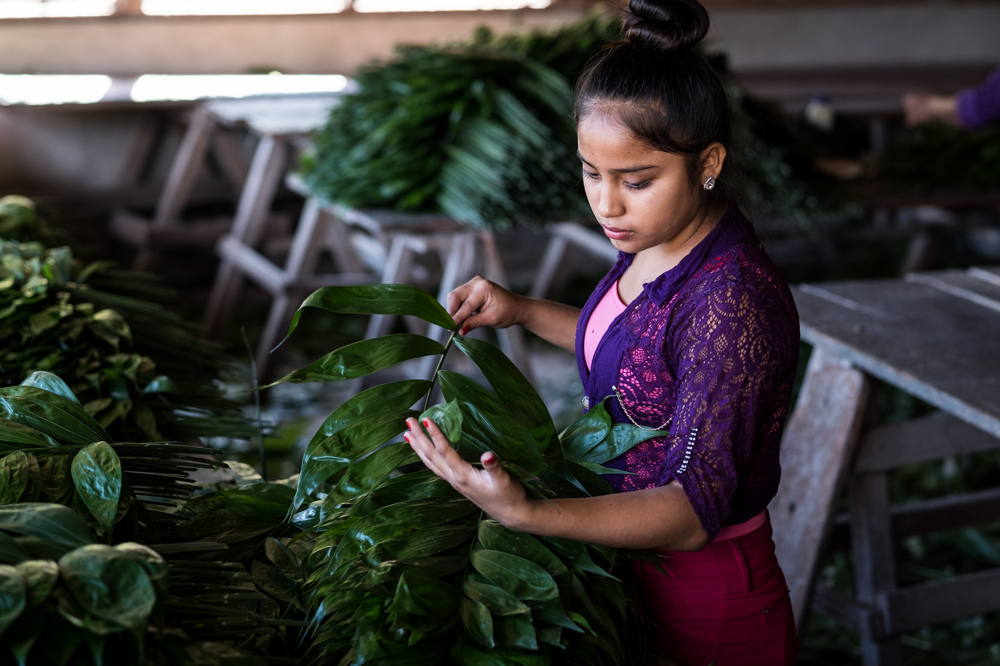
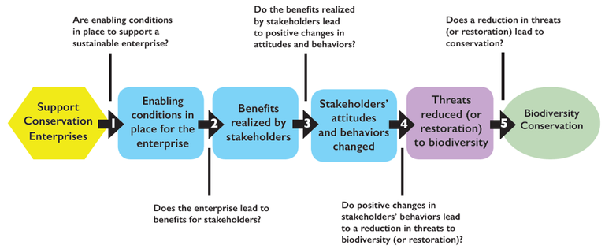
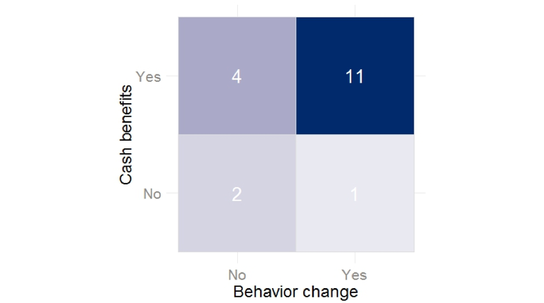

Does providing benefits from conservation enterprises lead to behavior change?

A lot of what we do in biodiversity conservation, from establishing no-take zones to curbing the demand for wildlife products, requires changing behavior. Conservation enterprises (e.g. ecotourism or butterfly farming), a commonly used conservation strategic approach, are believed to motivate participants to discontinue environmentally unsustainable activities by providing them with cash benefits from sustainably using natural resources. USAID’s synthesis on conservation enterprises summarizes the logic of the approach as follows: If economic benefits are realized, then the people taking part in conservation enterprise (through selling X or providing Y service) will change their negative behaviors (such as hunting or illegal logging), reducing threats to biodiversity—which will ultimately lead to biodiversity conservation. The figure below, from USAID’s synthesis, describes this generalized theory of change.

USAID’s generalized theory of change for conservation enterprises and learning questions from the USAID conservation enterprises learning agenda.
Despite the extensive use of conservation enterprises around the world, the evidence supporting their effectiveness—and the key assumptions that underlie them—is still weak. A more complete understanding of the factors that can influence the effectiveness of conservation enterprises can improve our capacity to more effectively design and implement programs and conservation enterprise activities.
A systematic review of alternative livelihoods identified a set of 18 activities described in 14 studies that reported behavioral changes as a result of conservation enterprises. This collection of studies presented an opportunity to investigate the relationship between benefits and behavior change, one of the key themes on USAID’s conservation enterprises learning agenda. Using information contained in this set of studies, we set out to answer the following question: is there evidence that behavior change is associated with the provision of cash benefits from the enterprise?
Here is what we found:
Benefits generally co-occurred with changes in behavior. In the activities included in our analysis, the provision of cash benefits was strongly associated with behavior change (see figure below). Eleven out of the twelve activities that reported behavior change also reported that cash benefits had been realized by those taking part in the conservation enterprises.

Relationship between cash benefits from enterprises and behavior change. Almost 75% of the activities that lead to behavior change also produced cash benefits for participants.
It’s challenging to establish a cause-effect linkage between enterprise benefits and behavior change. In most studies, it was not possible to conclude that the benefits received by enterprise participants caused the behavior change. Although the results above are consistent with the generalized theory of change, some of the studies we analyzed suggested that factors other than the benefits from the enterprise may have driven or influenced the behavior changes observed. Overall, our analysis shows that benefits (both cash and non-cash) were most often associated with behavior change, but additional evidence is needed to demonstrate a causal relationship.
Some behavior change is only temporary. Some of the studies we analyzed found that when activities ended, or when important changes in market conditions on which the enterprises depended occurred, many participants returned to unsustainable activities. In one study, increasing prices of fresh fish and access to the aquarium trade contributed to making fishing an attractive source of income despite the availability of a conservation enterprise.
Benefits can have unintended consequences. The assumption that additional income from conservation enterprises will be primarily invested in activities that have little or no environmental impact is not always true. About half of the participants in an activity providing microcredits to discourage unsustainable fishing reported planning to invest their loans to buy more fishing equipment.
Non-cash benefits can also motivate behavior change. Eight activities reported non-cash benefits; six of these (75%) were associated with behavior change. Studies described a variety of non-cash benefits that could be significant and might be as valuable as cash benefits, including:
- Access to education or health care
- Access to energy sources
- Access to wild foods and medicines
- Improved law enforcement
- Food security
- New friendships and professional relationships
- Problem animal control
- Public infrastructure
- Soil improvements
- Strengthened social bonds
Unfortunately, no enterprises in our sample produced only non-cash benefits. Therefore, it was impossible to separate the effect of cash and non-cash benefits on behavior change.
Some studies provided evidence that confirms previous findings included in USAID’s synthesis on conservation enterprises:
Benefits don’t always have to be substantial to lead to change. In one activity, behavior change (reporting instances of littering or the use of illegal fishing gear) occurred even when the enterprise produced only modest cash benefits.
Equitable distribution of benefits can be important. In one study, behavior change was observed in sites where enterprise benefits were perceived to be equitably shared. In this study, only farmers from hamlets where benefits from a microenterprise program were perceived to have been equitably distributed reported reductions in natural resource dependency and better relations with protected area staff.
Our results suggest that valuable evidence can be generated through implementation if adequate monitoring, evaluation, and learning (MEL) systems are in place. Among the factors that could be investigated in future MEL plans are:
- The immediate driver(s) of the desired behavior change (e.g., what motivated the fisher to stop fishing?)
- The attitudes of the community toward the enterprise and the biodiversity, and how they changed (or not) over time
- The conditions under which enterprises need to aim for cash benefits equal to or greater than those produced by other sources of income (i.e., is there a threshold at which cash benefits start to effectively motivate behavior change?)
- The importance of non-cash benefits as motivators of behavior change
- The social and cultural attributes that contribute to or hinder behavior change
Overall, the results of this analysis are consistent with a generalized theory of change for conservation enterprises: providing benefits can lead to behavior change. Understanding how and why this happens requires robust monitoring, evaluation, and learning systems when using a conservation enterprise approach for biodiversity conservation.